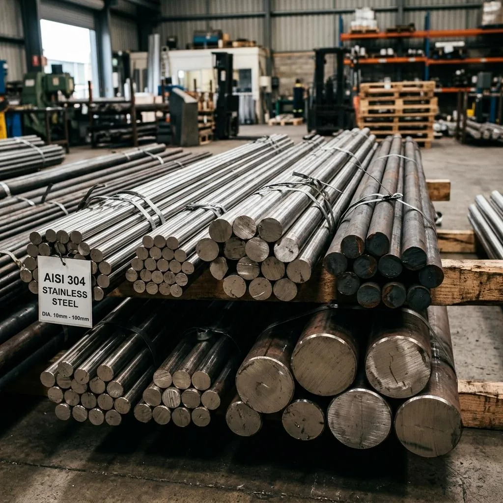

Tatvam Overseas Inc is a leading stockist and exporter of corrosion-resistant high nickel alloys and superalloys in Mumbai, India. We supply Inconel 600, Inconel 625, Monel 400, and Hastelloy C-276 pipes, plates, and bars with 100% Positive Material Identification (PMI), EN 10204 3.1 certification, and seaworthy worldwide export packaging.
What Nickel Alloys & Superalloys Are Available in Ready Stock?

Inconel 625 & 600 Pipes, Sheets & Bars
High-strength nickel-chromium-molybdenum alloy with niobium addition for superior fatigue resistance and cryogenic to 980°C operation.
View Inconel Details
Monel 400 (UNS N04400)
Nickel-copper solid-solution alloy resistant to seawater, rapidly flowing marine water, hydrofluoric acid, and sulfuric acid environments.
Inquire for Monel 400
Hastelloy C-276 (UNS N10276)
Nickel-molybdenum-chromium alloy with tungsten designed for severe chemical pollution control, scrubbers, and waste incineration.
Inquire for Hastelloy
Titanium Grade 2 & Grade 5
Commercially pure Grade 2 and aerospace Grade 5 (Ti-6Al-4V) for chlor-alkali plants, heat exchangers, and marine desalination.
Inquire for TitaniumWhat Are the Standards and Chemical Compositions of Superalloys?
Chemical compositions, ASTM manufacturing standards, and critical mechanical properties for our nickel alloy and superalloy inventory.
| Grade | Standard | Chemical Composition | Sizes / Thickness | Finishes / Service |
|---|---|---|---|---|
| Inconel 625 (UNS N06625) | ASTM B443 / B444 | Ni: ≥58%, Cr: 20-23%, Mo: 8-10%, Nb+Ta: 3.15-4.15% | 0.8 mm to 30 mm / 1/2" to 12" NB | Annealed, Descaled, Marine & Aerospace |
| Inconel 600 (UNS N06600) | ASTM B168 / B167 | Ni: ≥72%, Cr: 14-17%, Fe: 6-10% | 1.0 mm to 25 mm / 1/2" to 8" NB | High Temp Furnace & Nuclear |
| Monel 400 (UNS N04400) | ASTM B127 / B165 | Ni: ≥63%, Cu: 28-34%, Fe: ≤2.5% | 0.8 mm to 20 mm / TODO: custom shapes | Bright / Descaled Marine Service |
| Hastelloy C-276 (UNS N10276) | ASTM B575 / B622 | Ni: Bal, Mo: 15-17%, Cr: 14.5-16.5%, W: 3-4.5% | 1.0 mm to 25 mm / 1/2" to 10" NB | Pickled, Wet Chlorine & Acid |
| Titanium Gr. 2 (UNS R50400) | ASTM B265 / B338 | Ti: ≥99.2%, Fe: ≤0.30%, O: ≤0.25% | 0.5 mm to 20 mm / 1/2" to 8" NB | Mill Finish, Seawater Desalination |
Quality Assurance & Material Testing Guides
EN 10204 3.1 & PMI Verification
Why 100% XRF optical emission spectrometry and mill test certificate correlation is mandatory for nickel superalloys.
Read MTC GuideSS 304 vs 316L vs Superalloys
When standard stainless steels reach their pitting limit and when superalloys become the only safe engineering choice.
Read Comparison GuideFrequently Asked Questions About Nickel Alloys & Superalloys
What factors determine nickel alloy and superalloy pricing in India? ↓
What product forms and sizes of superalloys are available in stock? ↓
What standards, testing, and MTC certificates do you provide? ↓
What is the Minimum Order Quantity (MOQ) and dispatch timeline for nickel alloys? ↓
What payment terms and mill origins do you support? ↓
Nickel Alloy RFQ
Share required alloy (Inconel 625, 600, Monel, Hastelloy), form, dimensions, and quantity. Quote within 2-4 working hours (Mon-Sat, 9 AM-7 PM IST).
Technical Tools
Calculate nickel alloy weights and examine quality certification procedures.